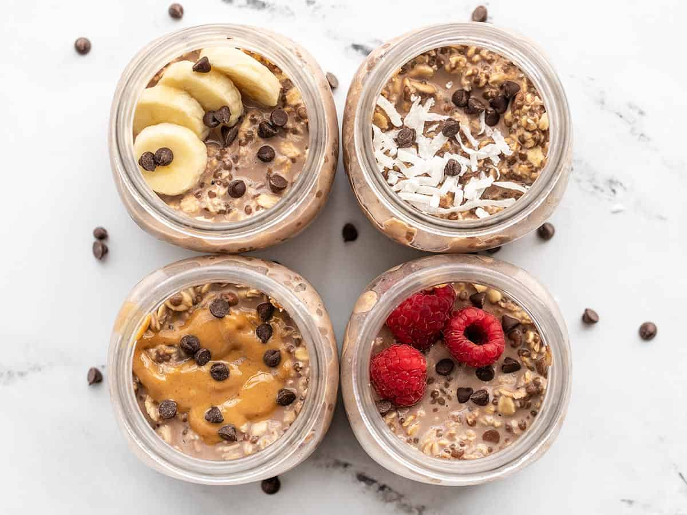

My weekly meal plan
Hello, my name is Vy, and I like to do a big meal plan for the week on Sunday, so I can get it ready to go for the week.
Breakfast
Breakfast is usually a grab-and-go deal, so I make these overnight oats and it’s ready to take to the office in the morning. This week I made the PB&J, carrot cake and basic overnight oats from
this recipe.

Total cost:
$2 for 5 servings
Lunch
For lunch, this week I made:
- Homemade sausage and egg mcmuffin
- A salad
- Yogurt with passionfruit, grapefruit and honey
Total cost:
$20 for 5 servings
Dinner
Potatoes were on sale for $2 a kg at my local grocery store, so I made a large Shepherd’s pie with another
great recipe from Recipe Tin Eats
, and I will eat it with a salad and a chocolate mousse for dinner.
Total cost:
$8 for 5 servings